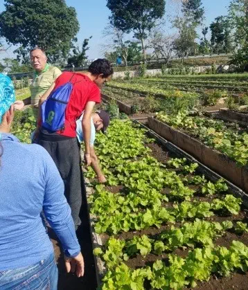
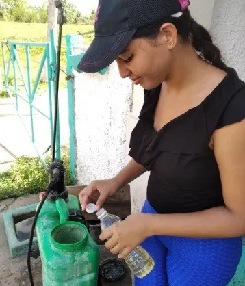
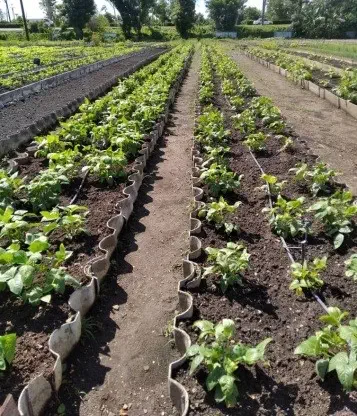
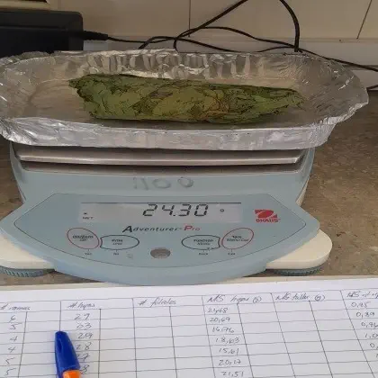
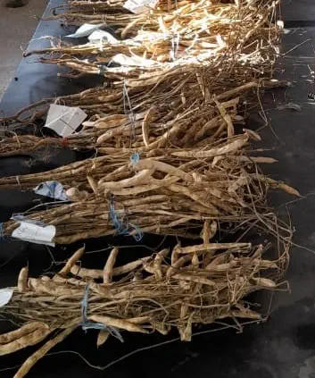

Inicio
Proyecto
Integrantes
Resultados
Materiales de consulta
Menú
Resultados obtenidos del personal capacitado y responsable en la provincia de Pinar del Río.
Resultados obtenidos del proyecto
Esfuerzo de todos los integtrantes del proyecto en cuestión
Resultados
EcoMic® y otros bioproductos

EcoMic®

EcoMic® y QuitoMax®

QuitoMax® y CBFERT

EcoMic®

EcoMic®